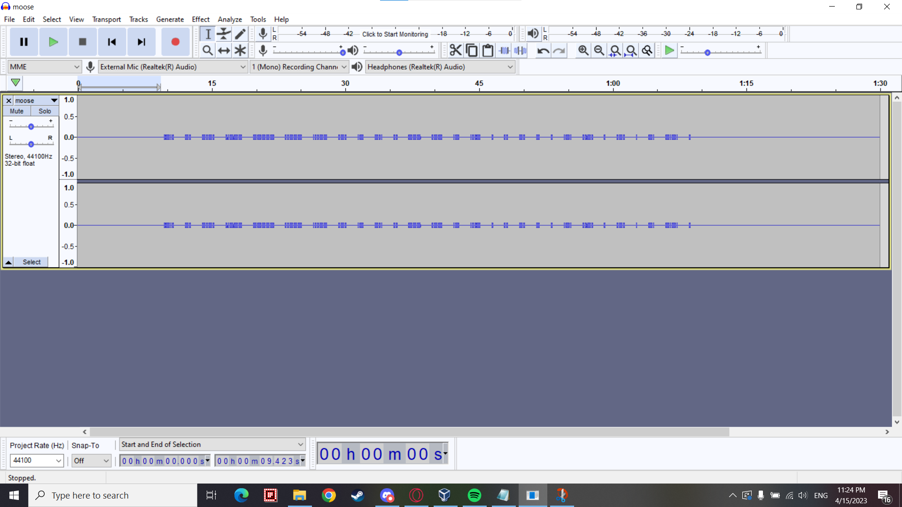

Right! What do we have here, two audio files?
I mean, what else can we do other than listen to them?
By checking file properties, we can see that both files have the exact same duration.
Below are ten second excerpts, taken from the same starting position of both files.
As suggested by the names, message.wav is a wave file containing morse audio that can faintly be heard, muffled by white noise. On the other hand, noise.wav is the exact same white noise played over the morse audio.
So what does one do now? Is it even possible to "subtract" audio from each other?
As it turns out, audio waves are additive, so if you played a waveform, and then played the inverse of that exact waveform, they will cancel each other out, and you will get silence.
A bit of a simplified explanation,
Everyone knows that (1)+(-1)=0, right?
Just like with waves, if you have the exact opposite of something, and you add them together, you will be resulted with nothing.
This example can be seen using a graphing calculator.
This is a common trick amongst musicians and producers when trying to extract the vocals or instruments from a fully mixed track.
If you got your hands on the exact studio instrumentals, reversed the polarity of the audio, and played it
against the final mix, you would be left with only the vocals of the song.
This is called "Phase cancellation", and is a well known trick used by musicians, producers and sound engineers
either to extract specific information from a track, or to achieve silence or a quiet environment in a venue.
This is also how noise-cancelling headphones work.
Of course, there is a catch to this; this method only works if you have the exact waveform or audio file that you want to cancel out.
More information can be found from here.
Anyways, in our case, we can hear that the noise being played is the exact one covering the audio in message.wav.
So now, let's pipe our audio samples into Audacity, which is a free, open-source digital audio editor that can be downloaded from here.
Once we have uploaded the two files onto Audacity, we will select one of the files (either will do fine).
After selecting a file, on the top tabs, go to Effects > Invert
Afterwards, press the play button and notice how different the audio sounds.
Below is a 10 second excerpt of the two tracks being played after we have performed phase cancellation.
Now let's export the file, you can name this whatever you like.
Now that we have our extracted audio with clear morse code, let's find an online audio-morse decoder to help us.
For our purposes, let's use this.
Let's upload our file and hit play. And....
This doesn't seem right. If the machine detected morse, there should be an output at the topmost box.
Seems that our audio file is too soft. Let's inform the program that its minimum threshold should be set lower.
In our case, let's drop the minimum threshold to -120dB, and let's stop and replay the program.
Alright! And here we have our flag!
But that program earlier didn't quite work the first time, what would happen if it never worked, like in this case?
In cases like these, sometimes it's good to go back to the old ways.
If the automatic program doesn't work, open audacity up again, and import the audio file you saved.

Navigate though the soundwave using ctrl+scrollwheel to zoom, and shift+scrollwheel to move sideways along the track.
The shorter bars in the waveform are dots (.) while the longer ones are dashes (-). With this information, go along the track and write out the string by hand.
You should be left with:
.-.. -. -.-. ..--- ----- ..--- ...-- .-. .- -.. .. --- .-- .- ...- . .. -. - . .-. ..-. . .-. . -. -.-. .
Now let's look for a TEXT morse code translator to use. For our purposes let's use this one.
And there you have it! The flag obtained in two ways!
This challenge was pretty cool, it was fun to apply sound engineering concepts in a CTF environment, that was a very new experience for me.
Creating this writeup however was a challenge, since it's hard to narrate everything you do without it sounding boring. Especially in a challenge that involves sound,
it's hard to engage the viewers if you only have text and images to express yourself lol
Other than that, there isn't much left to say. The challenge truly lived up to its difficulty of being easy.